README hero banner — nine candidates
Three subjects, three variants each. Every banner below is embedded as <img src="…svg"> — the same SVG-as-image mode GitHub uses, with no scripts and no external resources. Nothing here is inlined, so none of them can reach a capability the README would not give it.
Held to all four rejections. R1 whole-system, never a handoff or subsystem infographic — nothing in any candidate depicts an exchange. R2 the title is a plain <text> with no animation, opacity or keyframe that reaches it, so there is no state of the document in which it is absent; verified present, and unobscured, in all 45 rendered frames. R3 every animation is infinite and every keyframe list starts and ends on the same value, so the loop has no seam; the motion is an idle cycle, not a narrative. R4 the real 11×8 clawd in #D77757, posing through its four shipped poses.
The choice is the subject, not the medium. Vector is settled — every raster encoding of an eight-second composition ran 1.2×–45× over the 1 MB budget. These are 3–17 KB.
S1 · The world it lives in
safely — ~/.claude stopped being machine state and became a place that is deployed. One creature, the landscape that ships in the binary, and nothing else.
s1a-horizonTitle and creature on one full-width horizon. The plainest reading.
3,709 B
↑ animating · ↓ frozen, as a prefers-reduced-motion reader sees it — same artwork, no second fallback
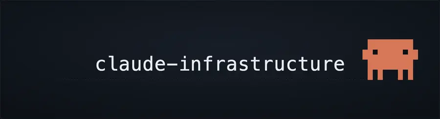
s1b-closeThe most restrained: one large creature, one hairline, the words. Nothing else in the frame.
3,702 B
↑ animating · ↓ frozen, as a prefers-reduced-motion reader sees it — same artwork, no second fallback
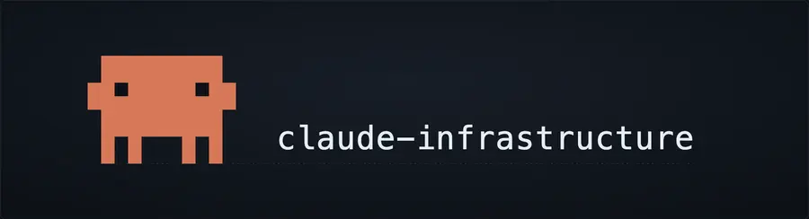
s1c-sceneThe fullest quote of the shipped scene — mounds and vegetation, the creature standing among them.
11,209 B
↑ animating · ↓ frozen, as a prefers-reduced-motion reader sees it — same artwork, no second fallback
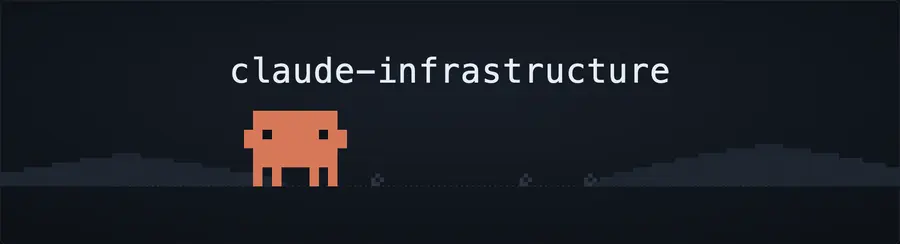
S2 · The fleet
many — several sessions run at once on one machine and cannot collide. The load-bearing detail is that nothing joins the creatures: a thread between two of them would rebuild the handoff infographic R1 rejected. Same ground, separate lanes, no contact — the absence is the argument.
s2a-lanesFour creatures evenly spaced on one horizon, each idling out of step.
![The words claude-infrastructure set in monospace on a dark plate. The title is present the whole time and never moves; the only motion is the orange Claude Code pixel creature idling — glancing left, glancing right and occasionally stretching both arms above its head — on a loop that repeats indefinitely with no restart. Four identical creatures stand evenly spaced along one dotted horizon beneath the words, each idling out of step with the others. Nothing joins them: there are no lines, threads or exchanges between them — they simply share the ground in separate lanes.](s2a-lanes.svg)
7,568 B
↑ animating · ↓ frozen, as a prefers-reduced-motion reader sees it — same artwork, no second fallback
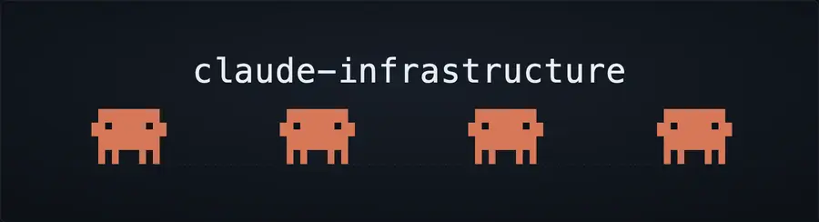
s2b-depthThree lanes at three distances, so parallelism reads as depth rather than as a row.
![The words claude-infrastructure set in monospace on a dark plate. The title is present the whole time and never moves; the only motion is the orange Claude Code pixel creature idling — glancing left, glancing right and occasionally stretching both arms above its head — on a loop that repeats indefinitely with no restart. Three creatures of different sizes stand on three separate dotted lines at different heights, reading as three distances. Each idles on its own timing. No line connects one lane to another.](s2b-depth.svg)
6,549 B
↑ animating · ↓ frozen, as a prefers-reduced-motion reader sees it — same artwork, no second fallback
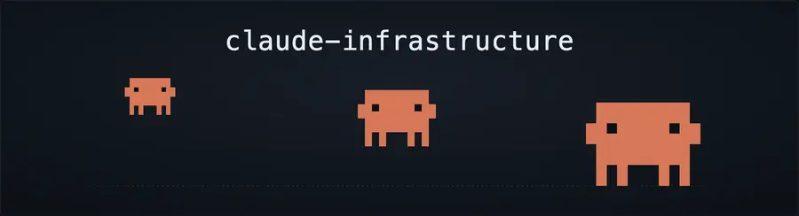
s2c-rowThe words hold the left, the population holds the right, both on one line.
7,551 B
↑ animating · ↓ frozen, as a prefers-reduced-motion reader sees it — same artwork, no second fallback
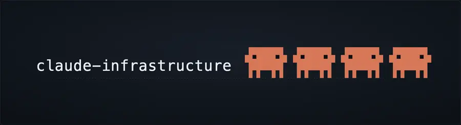
S3 · The night shift
unattended — it runs while you are asleep and pages you only when a human must decide. The night variant of the scene ships in the same bundle as the day one.
s3a-starfieldSparse stars on uncorrelated slow timings; the creature still working beneath them.
![The words claude-infrastructure set in monospace on a dark plate. The title is present the whole time and never moves; the only motion is the orange Claude Code pixel creature idling — glancing left, glancing right and occasionally stretching both arms above its head — on a loop that repeats indefinitely with no restart. The plate is a night sky: sparse faint stars, each brightening and dimming on its own slow timing, none in step with another. The creature stands on the dotted horizon beside the words, still working.](s3a-starfield.svg)
12,821 B
↑ animating · ↓ frozen, as a prefers-reduced-motion reader sees it — same artwork, no second fallback
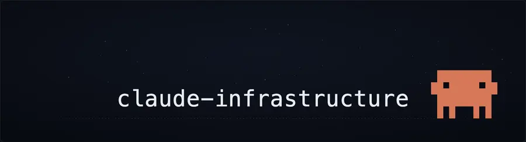
s3b-treeThe night scene's canopy and trunk, quoted, with the creature at the far side of the same line.
![The words claude-infrastructure set in monospace on a dark plate. The title is present the whole time and never moves; the only motion is the orange Claude Code pixel creature idling — glancing left, glancing right and occasionally stretching both arms above its head — on a loop that repeats indefinitely with no restart. Under a sparse field of faint twinkling stars, the creature stands at the left of a dotted horizon with the words to its right, and a small dim tree stands at the far right of the same line.](s3b-tree.svg)
11,999 B
↑ animating · ↓ frozen, as a prefers-reduced-motion reader sees it — same artwork, no second fallback
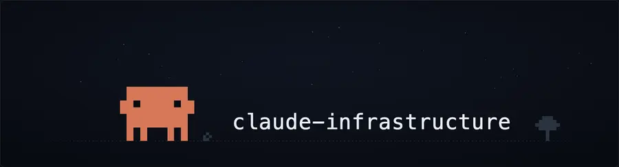
s3c-longwatchA denser, fainter sky — and one star on a far longer beat than any other: the page that is not coming.
![The words claude-infrastructure set in monospace on a dark plate. The title is present the whole time and never moves; the only motion is the orange Claude Code pixel creature idling — glancing left, glancing right and occasionally stretching both arms above its head — on a loop that repeats indefinitely with no restart. A dense field of very faint stars twinkles on uncorrelated slow timings, with one star at the right on a far longer beat than any other. The creature stands centred on the dotted horizon below the words.](s3c-longwatch.svg)
17,796 B
↑ animating · ↓ frozen, as a prefers-reduced-motion reader sees it — same artwork, no second fallback
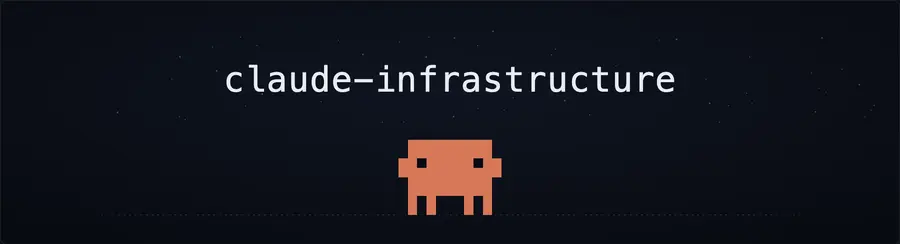